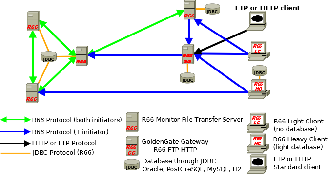
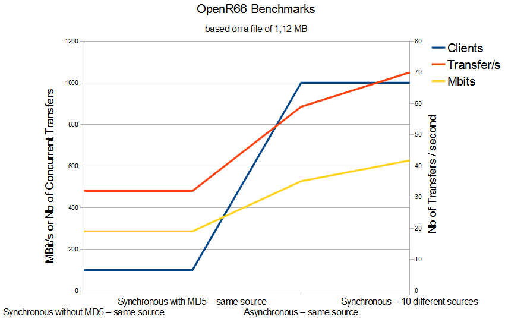

Waarp R66 : software for massive file transfer with monitoring : Waarp Route66
This software is a file transfer monitor in protected and powerful contexts.

Waarp R66 is Massive a File Transfer Monitor as:
Efficient and secured
Adaptative to functional needs
Integration within IT (SNMP compatible)
Strong Administration and Production tools
History of transfers, tracked events
Independent of Server Platforms
Totally Open Source
Usable with different kinds of Database, centralized or distributed
Integration within Waarp file transfer gateway (translating from HTTP/FTP to R66)
-
Integration within an application through extra Java Classes, both on client and server side, allowing Application 2 Application model
This Software has the following properties:
Full Java, so platform independent (tested under Windows, Linux, AIX)
Allows to manage up to 2^64 simultaneous transfers
Uses a database (JDBC: H2, MySQL or Oracle or PostGreSQL indifferently) to retain configuration and log of transfer but is not required for clients to be functional
Allows the sending and the reception (in Push or Pull mode) between two identified partners
- The transfer is protected (controlled optionally by MD5 or SHA1 or others, with restart of transfer, SSL support)
- Allows the execution of pre operation (before transfer) or of post operation (after transfer) or error operation (after an error occurs)
- Multiplexing of network connections between two servers (firewall compliant)
- KeepAlive internal and TimeOut control
- Control on Bandwidth, CPU, simultaneous transfer limitation usage
- Functions of control and statistics, traces for all transfer operations
- Web support for monitoring production
- SNMP compatible as Agent both in pull or notification mode with SNMP V2 and V3 compatibility
- Usual client submitted transfer through database as asynchronous operation
- Synchronous client which directly manages its transfer, using however the database as control
-
Synchronous thin client which does not used the database at all (useful for instance for light client on personal computer and not server in production) - those clients are not listening to incoming transfer requests but can only initiates transfers (in push or pull)

This project is in production in the French Ministery of Finances to enable file transfers from an FTP protocol (client side) to a Waarp R66 protocol (server side protocol) and to allow file transfers between two instances within the same services with a long distance and with a high secured and controled protocol due to the high level of security and integrity in the corresponding project since end of 2009. See Crawd User page for some other IT using it.
Benchmarks (2009)
Some pre benchmarks were done on PC and a Power5 server (12 CPU). In every benchmarks, the java used memory was less than 200 Mbytes, the CPU was always less than 4 CPU by JVM (server or client). The tested file has a size of 1,120 Mbytes.
100 synchronous clients using one multiplexing network connection: 32 transmissions by second or 286 Mbits (with or without MD5)
1000 asynchronous transfers (submitted work) using one multiplexing network connection: 59 transmissions by second or 527 Mbits
-
1000 synchronous clients using 10 multiplexing network connection (100 synchronous clients by network client): 70 transmissions by second or 627 Mbits
